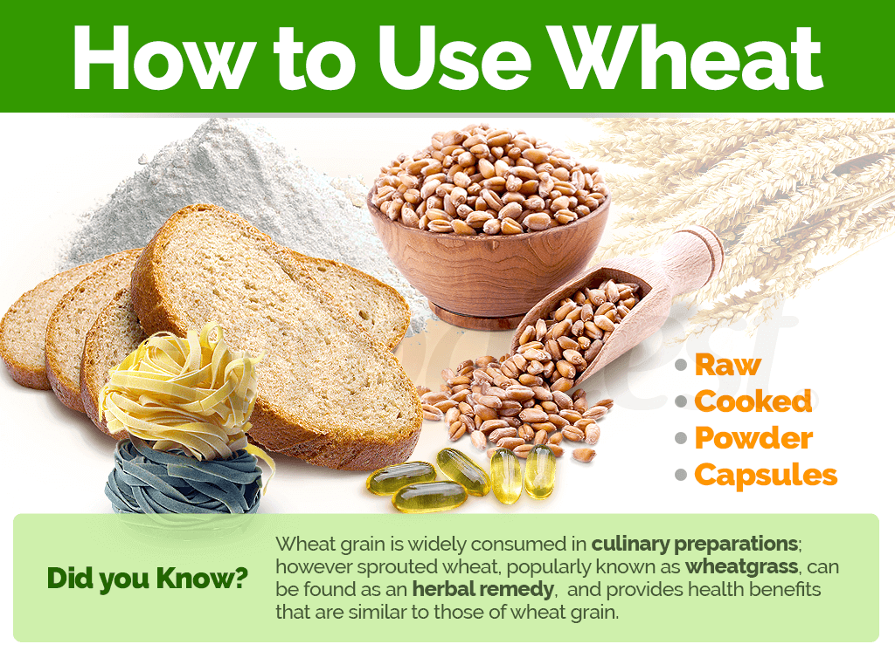
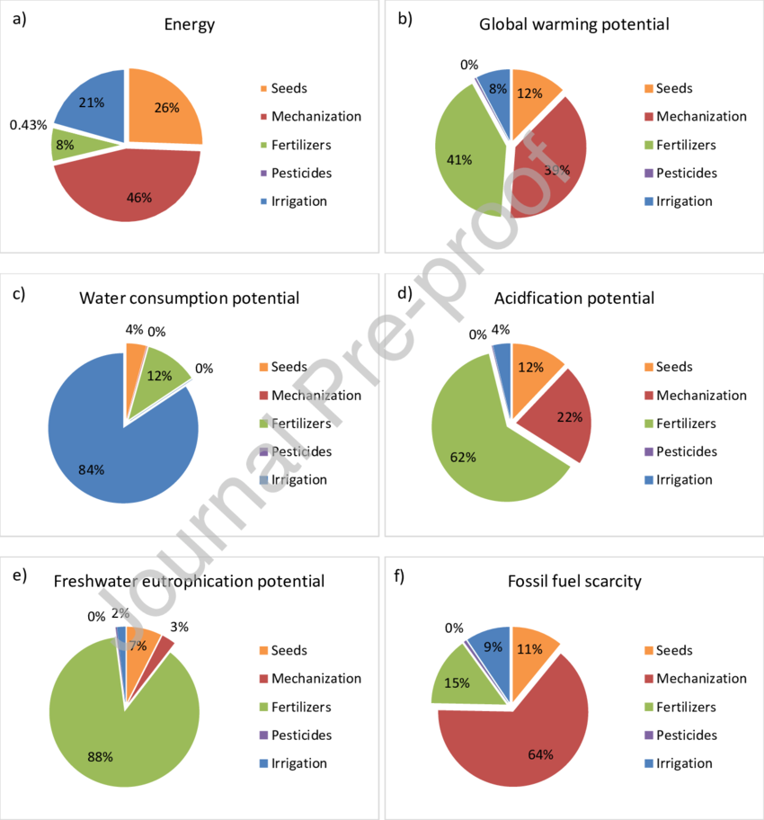

Wheat
Types of Wheat:
Common Wheat (Triticum aestivum):
Also Known As: Bread wheat.
Description:Common wheat
is the most widely cultivated type of
wheat and is a staple food crop globally.
Uses: It is primarily used for making bread, pastries, cakes, and other
baked goods. Its
flour is versatile, with varying protein content suitable for different baking needs.
Growth Conditions: Thrives in temperate climates with moderate rainfall and
well-drained soils. It
requires cool temperatures during the growing season and warm, dry conditions for harvest.
Varieties: Includes soft and hard wheat varieties, which differ in
gluten content. Hard
wheat is higher in protein and gluten, making it ideal for bread. Soft wheat has lower
protein, suitable for pastries.
Durum Wheat (Triticum durum):
Also Known As: Durum wheat.
Description: Durum wheat
is known for its high protein and gluten content, making it the hardest of all wheat types.
Uses: It is used primarily for making pasta, semolina, and couscous.
Durum wheat flour is coarser and produces a yellowish end product.
Growth
Conditions: Grows well
in dry, hot climates. It requires less water than common wheat and is often grown in arid
regions.
Characteristics: Durum wheat has a dense and glassy
endosperm,
which contributes to
its firm texture after cooking. It also provides high nutritional value with significant
protein content.

Spelt Wheat (Triticum spelta):
Also Known As:Dinkel wheat or hulled wheat.
Description: Spelt is an ancient grain with a
tough hull that
must be removed before processing.
Uses: It is used in specialty and
artisanal bread, pasta, and cereals. Spelt flour is gaining popularity for its nutty flavor
and health benefits.
Growth Conditions: Tolerates a variety of climates and soils,
including poor soil
conditions. It is often grown organically due to its resistance to pests and diseases.
Nutritional Value: Spelt is rich in protein, dietary fiber, and
essential minerals like iron
and magnesium. It is considered more digestible for some people compared to common wheat.
Emmer Wheat (Triticum dicoccum) and Einkorn Wheat (Triticum monococcum):
Also Known As: Farro (Emmer wheat) and einkorn.
Description: These ancient grains have
remained largely unchanged for thousands of years.
Uses: Emmer and
einkorn are used in
specialty foods, health foods, and artisanal bread. They are valued for their rich, complex
flavors and nutritional benefits.
Growth Conditions: Adaptable to
various growing
conditions, including marginal soils. They are often cultivated in traditional farming
systems.
Nutritional Value: Both grains are high in protein, fiber,
and essential
micronutrients. Einkorn, in particular, has a high content of lutein, beneficial for eye
health.
Characteristics: Emmer has a slightly chewy texture and nutty
flavor, while einkorn
is lighter and more delicate. Both are often used in whole grain form or as flour for
baking.
Growing Conditions
Climate:
Temperature:
Germination Stage: Wheat seeds require a soil temperature of around 12°C to
25°C for optimal germination. Low soil temperatures below 5°C can delay or prevent
germination, while temperatures above 30°C can adversely affect it.
Vegetative
Growth Stage: During the vegetative phase, wheat prefers cool temperatures
between 10°C and 24°C. This range supports optimal leaf development and tillering (the
production of side shoots that can become additional grain-producing stems).
Reproductive Stage: As wheat transitions from vegetative growth to
reproductive stages (heading, flowering, and grain filling), slightly warmer temperatures
(18°C to 24°C) are favorable. However, excessive heat, particularly temperatures above 30°C
during flowering, can lead to reduced pollination and grain formation.
Harvest
Stage: Warm and dry conditions are ideal during harvest, as they help to ensure
the wheat grains are mature and reduce the moisture content. This prevents fungal diseases
and spoilage during storage.
Rainfall and Moisture:
Moderate Rainfall: Wheat requires moderate rainfall, generally between
300mm to 900mm per
growing season. Rainfall distribution should be well-timed to ensure sufficient moisture
during key growth stages, such as germination and early vegetative growth.
Irrigation: In regions where rainfall is insufficient or irregular,
irrigation is crucial.
It helps maintain adequate soil moisture, especially during critical periods like tillering,
flowering, and grain filling. Over-irrigation, however, should be avoided to prevent
waterlogging and root diseases.
Drought Resistance: Some wheat varieties are bred for drought resistance
and can tolerate
dry conditions better. These varieties are particularly important in arid and semi-arid
regions.
Sunlight:
Wheat requires full sunlight for at least 6 to 8 hours a day. Adequate sunlight is essential
for photosynthesis, which drives plant growth and development.
Cloudy and overcast
conditions, especially during critical growth phases, can reduce photosynthetic activity
and, consequently, grain yield.
Humidity:
Wheat prefers low to moderate humidity levels. High humidity can create favorable conditions
for fungal diseases such as rusts and blights, which can significantly impact yield and
quality.
Proper field management practices, like maintaining adequate spacing between
plants and timely application of fungicides, can help manage disease pressure in
high-humidity conditions
Wind:
Mild winds can aid in pollination by helping to distribute pollen. However, strong winds can
cause lodging, where the wheat stalks fall over, making harvesting difficult and reducing
yield.
Windbreaks or shelterbelts can be used to protect wheat fields from strong
winds, helping to maintain plant stability and health.
Soil:
Soil Type:
Loamy Soil: Wheat thrives best in loamy soils, which are a balanced mixture
of sand, silt, and clay. These soils provide good drainage while retaining enough moisture
for optimal growth.
Clayey Soil: Clayey soils can also be suitable for
wheat, provided they are well-drained to prevent waterlogging. These soils have good
nutrient retention but may require proper management to ensure good aeration.
Sandy Loam: Sandy loam soils, which are a mix of sand and loam, are also
favorable for wheat cultivation. They offer good drainage and ease of root penetration but
may require additional organic matter to improve nutrient content.
Soil Structure:
Well-Drained: Wheat requires well-drained soil to prevent waterlogging,
which can lead to root rot and other diseases. Soil with good drainage ensures that excess
water is efficiently removed.
Good Aeration: Proper soil aeration is
essential for root respiration and overall plant health. Well-aerated soils support vigorous
root growth and nutrient uptake.
Soil Fertility:
Nutrient-Rich:Wheat grows best in fertile soils with adequate levels of
essential nutrients such as nitrogen (N), phosphorus (P), potassium (K), and micronutrients
(e.g., zinc, iron, copper).
Organic MatterThe presence of organic
matter in the soil, such as decomposed plant material or compost, enhances soil fertility by
providing nutrients and improving soil structure. Organic matter also supports beneficial
soil microorganisms.
Soil pH:
Optimal pH Range: Wheat prefers a slightly acidic to neutral soil pH,
typically between 6.0 and 7.5. Soils outside this pH range may require amendments to adjust
the pH to an optimal level.
pH Management: Lime (calcium carbonate) can be added to acidic soils to raise the pH, while sulfur or organic matter can be used to lower the pH of alkaline soils.
Soil Preparation:
Plowing and Tilling: Proper soil preparation involves plowing and tilling to create a fine seedbed. This helps to improve soil structure, eliminate weeds, and incorporate organic matter or fertilizers.Leveling: Leveling the field ensures uniform irrigation and prevents waterlogging in low-lying areas. It also facilitates efficient planting and crop management.
Soil Conservation:
Erosion Control: Practices such as contour plowing, terracing, and maintaining ground cover help prevent soil erosion, which can deplete soil fertility and structure.Crop Rotation: Rotating wheat with other crops, such as legumes, can improve soil health by reducing the buildup of pests and diseases and enhancing soil nutrient levels through nitrogen fixation.
Water Requirements:
General Water Needs:
Wheat requires a total of approximately 450-650 millimeters (mm) of water throughout its growing season, depending on the variety, climate, and soil conditions.
Critical Growth Stages:
Germination: Adequate soil moisture is necessary for seed germination and seedling establishment.
Tillering: Water is crucial during the tillering stage (approximately 40-45 days after sowing) to promote the growth of additional tillers, which can lead to higher yields.
Booting: Adequate moisture at the booting stage (about 60-70 days after sowing) ensures proper head development.
Flowering and Grain Filling: Irrigation during the flowering and grain filling stages (around 80-100 days after sowing) is vital for achieving good grain size and weight.
Late Season: Reducing irrigation towards the end of the growing season allows the soil to dry, facilitating harvesting and preventing lodging.
Drought and Stress Management:
Drought-Resistant Varieties: Plant drought-resistant wheat varieties in regions prone to water scarcity. These varieties are bred to withstand periods of water stress.
Deficit Irrigation: Implement strategies where water is applied during the most critical growth stages to manage water resources during drought conditions.
Planting and Seeding:
Planting:
Wheat can be sown either by broadcasting seeds or by using seed drills for more uniform planting. It is typically sown in the fall (winter wheat) or spring (spring wheat).
Seeding Rates:
The seeding rate varies but generally ranges from 100 to 200 kg per hectare, depending on the variety and planting method.
Nutritional Value:
Carbohydrates:
Wheat is a rich source of carbohydrates, providing energy.
Fiber:
\Whole wheat products are high in dietary fiber, promoting digestive health.
Vitamins and Minerals:
Wheat contains essential nutrients, including B vitamins, iron, and magnesium.
Uses:
Food:
Wheat is milled into flour for baking bread, cakes, and other baked goods. Durum wheat is specifically used to make pasta. Wheat is also used in brewing beer, and wheat bran is used as a dietary supplement.
By-Products:
Wheat straw is used for animal bedding, mulch, and bioenergy production.
Environmental Impact and Sustainability:
Wheat is less water-intensive than some other crops like rice, but efficient water management is still crucial. Wheat farming contributes to greenhouse gas emissions, mainly through the use of fertilizers and fuel for machinery. Sustainable practices such as crop rotation, conservation tillage, and the use of cover crops help improve soil health and reduce environmental impact.
